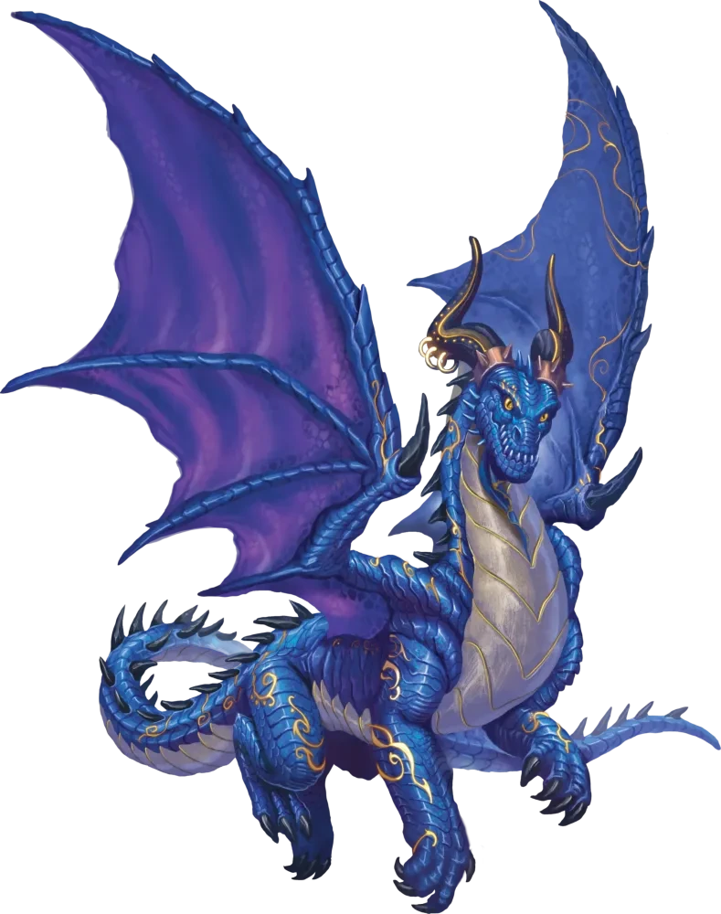

各年龄段数据卡
对于一条太古靛青龙来说，派对永远不会散场。它们拥有无穷的耐心、强横的体魄、丰厚的财力与纯粹的钢铁意志，足以一路横冲直撞地从一场派对赶往下一场派对，从一场狂欢奔赴下一场狂欢，从一场庆典转战下一场庆典。毕竟没多少靛青龙能活到如此受人敬仰的高龄，所以活着的每一天都值得尽情欢庆！ 尽管寿元漫长得令人难以置信，太古靛青龙却深谙及时行乐的真谛；它们能够以与寿数短暂得多的凡人别无二致的快节奏拥抱生活――在所有活过千年乃至更久的存在当中，几乎没有谁能在这方面与它们相提并论。这让太古靛青龙在凡人百姓眼中显得出奇地平易近人；可这份亲切感有时也会让人忽略一个惊人的事实：那个总在深夜大搞派对、吵闹不休的邻居，实际上是一头古老的龙族巨擘――若非它的天性本就不屑此举，单凭肉身蛮力它就足以将整片城区夷为平地。尽管太古靛青龙对派对与庆典经久不衰的执着偶尔会让古板严肃或喜静低调的生灵心生厌烦，但任谁都很难否认，太古靛青龙最令人钦佩的品质之一，正是它们在历经岁月、年代、世纪乃至千禧年的漫长时光洗礼后，依然对各式盛会与欢宴抱有赤诚不灭的热爱。绝大多数生灵早在那之前便已厌倦麻木；可一条太古靛青龙在活过整整一千年后，却依旧能保持孩童般的新奇与惊叹，足以让一个年仅半百便已愤世嫉俗、心灰意冷的人类感到瞠目结舌，甚至心生艳羡。 这绝不是说太古靛青龙喜欢单调乏味或千篇一律的俗套――事实恰恰相反。只不过在它们眼中，每一场派对都是独一无二、狂放不羁、毫无剧本且即兴迸发的奇妙盛事，永远能带来出人意料的惊喜、震撼与欢愉。为了进一步缔造更加令人难忘的体验，太古靛青龙往往会设法为自己举办的派对加入别出心裁的主题、花样改造或“惊喜反转”；同样地，当受邀以宾客身份出席他人的聚会时，如果某场活动带有令人眼前一亮的新奇“噱头”、能在众多邀约中脱颖而出，它们也会更乐意赏光前往。 鉴于它们在任何派对上都能成为全场焦点的非凡魅力，太古靛青龙往往是各方争相邀约的座上贵宾。坐拥漫长一生积累下来的海量挚友与熟人，它们手头自然攥着一长串潜在的请柬名单，完全可以挑三拣四地精选自己愿意出席的场次。再加上太古靛青龙自己也会频繁举办大量盛会，就不难理解为何能请动它们出席会如此一票难求了。更何况，由于它们露面极少，再加上其他享乐名流普遍深知太古靛青龙乃是登峰造极的欢宴鉴赏家，能否请到一条太古靛青龙莅临，俨然成了东道主彰显显赫身份地位的重要象征。这反过来又令雪片般的请柬愈发络绎不绝――当然，太古靛青龙自己对此可是一点儿也不介意！ 派对在哪里？较年轻的靛青龙常常在自家巢穴附近举办派对，而它们的巢穴通常就建在人口稠密的聚居地内部或周边。太古靛青龙则更偏爱坐拥多处活动场地；为此它们会在天南海北购置产业，诸如大型城市里的豪宅、私人海岛度假庄园等等。它们也会包下令人兴奋的特色场馆，或是在荒野腹地临时搭建起派对营地。只要是你能去到的地方，太古靛青龙就能在那里办起一场派对。 众神派对策划师加拉佐拉克斯与许多其他太古靛青龙一样，尽管背负着无数世纪的漫长岁月，加拉佐拉克斯依然深刻理解凡人那快节奏的喧嚣世界。然而与许多同族不同的是，她曾深入思考过自身独特处境所赋予的优厚条件，并由此决定去做一件极为不同寻常的大事。加拉佐拉克斯认定自己肩负着一项使命：利用自己独特的视角架起沟通的桥梁，连接起两类截然不同的存在――一边是从更宏大的尺度理解现实、将时间视作唯有用纪元方能衡量的白驹过隙的其他远古存在；另一边则是数量庞大、遍布世间，在短暂而跌宕的一生中热烈生活与去爱的芸芸凡人。这番抱负可谓崇高而深远，远比人们对一条靛青龙的通常印象要严肃庄重得多。倘若介绍到此为止，人们甚至可能会以为加拉佐拉克斯是一条与其他靛青龙截然不同的异类。当然，一旦得知加拉佐拉克斯心目中“架起桥梁”的具体方案是什么，这份崇高感恐怕难免要打上一点折扣――没错，亲爱的读者，你猜对了：那就是举办规模宏大、奢华铺张、制作成本高到离谱的跨界联谊盛会，旨在让那些太古原初的存在与同处一个世界的凡人们坐在一起大快朵颐、开怀畅饮、载歌载舞、共玩派对游戏。倒不是说用派对来达成这一目的本身有什么不对，但这难免让人怀疑：加拉佐拉克斯究竟是真心怀揣利他主义的崇高初衷，还是单纯为了找个冠冕堂皇的借口来办一场传奇派对？不过事实摆在眼前，确实偶有真正古老的存在出席她的联谊盛会，其中至少有一次还吸引来了一位次级半神。向来深谙品牌宣传之道的加拉佐拉克斯立刻抓住这一契机，四处为自己宣扬起一个全新的响亮名号：“众神派对策划师”。她正指望着这个称号能够叫响传开，吸引更多神明与凡人对她的盛会产生浓厚兴趣。 派对落幕之时尽管有些太古靛青龙（甚至还有一条声名显赫的远古靛青龙）成功举办过绵延数百年未曾间断的永恒派对，但对绝大多数太古靛青龙而言，每一场派对终有落幕之时，唯有曲终人散方能开启下一场狂欢。派对结束之后，太古靛青龙往往会先酣睡一觉以醒去这场史诗级狂欢的宿醉，随后便动用压倒性的、近乎尴尬地小题大做的庞大力量与魔法，三下五除二地搞定清扫善后之类的杂务。至于这种鲁莽粗暴的大扫除究竟是帮了忙还是造成了更大的破坏，那就因不同的太古靛青龙而异了。 |
 太古靛青龙 |